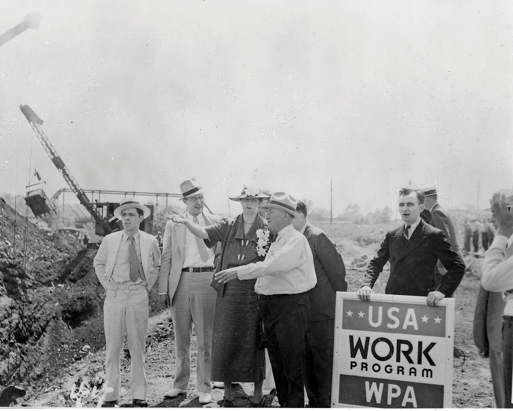
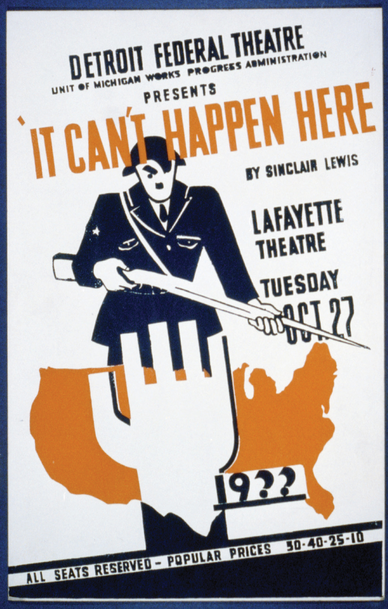
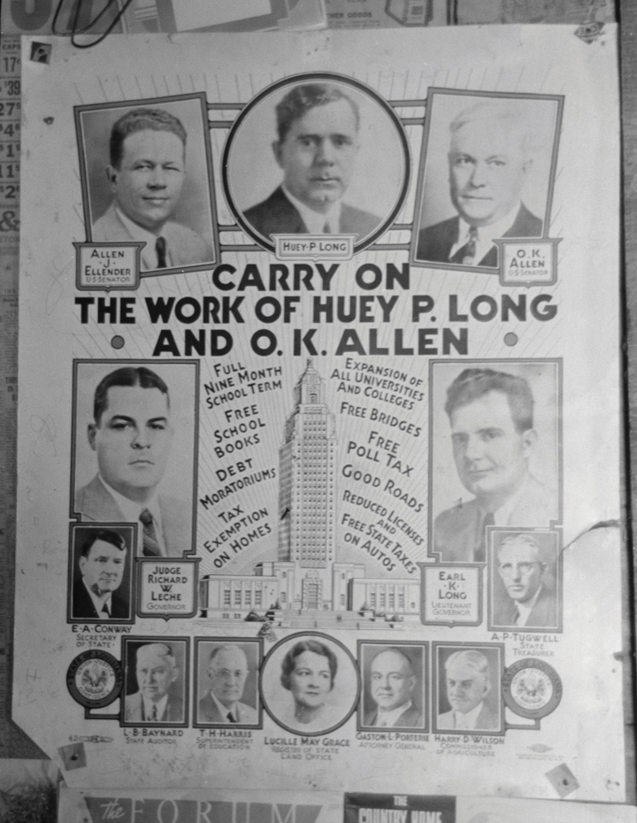
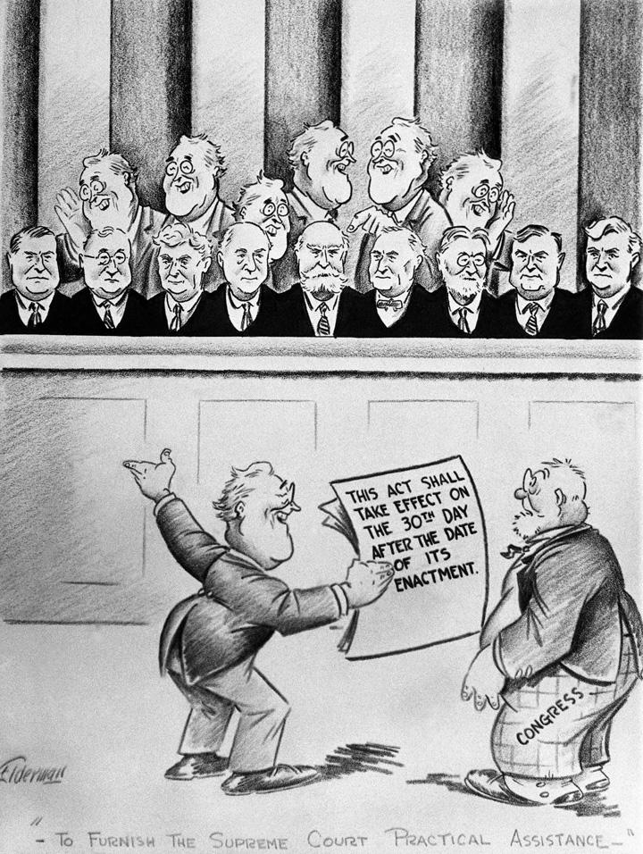

As the 1935 legislative session began, the US economy was more stable than it had been when Roosevelt took office. However, there had not been any significant economic recovery, and unemployment levels remained near their 1932 peak. Roosevelt and Congress agreed it was time to move beyond the limited federal jobs programs that were created in 1933 and 1934. The short-lived CWA had created the number of jobs needed to spur recovery, but it had been dismantled due to the haphazard nature of the program and escalating costs which expanded well beyond the CWA’s anticipated budget. In contrast, job growth had been slow within the PWA due to the planning required before beginning major construction projects. In addition, the PWA was under the management of the frugal Harold Ickes. Although he used PWA funds efficiently, critics believed Ickes moved too slowly in creating jobs.
In April 1935, Congress approved a massive spending bill that authorized over $4 billion in new projects. Among the programs this bill created was the National Youth Administration. This agency provided part-time work for college students and was designed to both finance student education and delay the entry of young adults into the full-time labor market. Funds were also allocated for the creation of the Rural Electrification Administration, an agency that financed publicly owned electric cooperatives that provided power to most rural communities for the first time. The flagship program of the “big bill,” as Roosevelt called it, was the Works Progress Administration (WPA)A federal jobs program created in 1935 and administered by Harry Hopkins. The WPA spent an estimated $12 billion and employed over 8 million people during its eight years of existence, although usually only about 1.5 million were employed at any given time. The goal of the WPA was to be an employer of last resort for those who otherwise would not have jobs and would presumably find their way onto relief roles. Most WPA workers were engaged in construction projects, although the WPA also employed writers, musicians, artists, and actors through various programs., which together with future allocations would spend $11 billion over the next eight years.
The first priority of the WPA, the president declared, was to transfer an estimated 3.5 million Americans from the relief roles to the payroll of federal works projects. Roosevelt declared that the government “must and shall quit this business of relief.” Offering direct cash payments was “to administer a narcotic,” Roosevelt believed. In contrast to the purpose-driven citizens who spent each day engaged in honest labor, Roosevelt suggested that the dole created “a spiritual and moral disintegration fundamentally destructive to the national fiber.”
The goal of the WPA was to fund only useful projects that provided wages large enough to offer material security but not so large as to draw workers away from employment in the private sector. The WPA employed 3 million people in its first year and over 8 million during its eight years in existence. During that time, the WPA built 600,000 miles of roads and highways and tens of thousands of buildings and bridges as well as many other projects.
The WPA was not without its critics. The decision to pay lower wages limited the number of experienced foremen, while many of the workers feared that completion of their present project might mean unemployment. Eager to not work themselves out of a job, workers dallied; the WPA was lampooned as standing for “We Poke Along” or “We Putter Around” by those who observed WPA crews taking breaks on the side of a road.
Figure 7.15
Eleanor Roosevelt visits a WPA worksite in Des Moines, Iowa, in 1936.
Others argued that WPA contracts and jobs were being used as a political football by the Democratic Party. With the exception of New York and a few other cities with Republican administrations, Democratic politicians were usually the ones that decided what projects were built and by whom. Machine politics often controlled these decisions and sometimes led to brazen abuses. For example, the Democratic mayor of Memphis required WPA workers to make political contributions, while Chicago’s notorious Democratic machine exacted tribute with little more finesse than the notorious crime bosses that influenced Chicago politics. New Jersey received over $400 million in WPA contracts, but workers in the Garden State were expected to contribute 3 percent of their weekly pay to the Democratic Party. In many of these cases, expectations that government workers kick back some of their pay to local political machines were different primarily in that these paychecks were being funded by taxpayers across the nation rather than city or state treasuries.
The WPA also received criticism from some individuals who believed that four smaller WPA programs designed to employ writers, musicians, actors, and artists were not a wise use of federal revenue. Others defended these programs as ensuring the preservation of history and the arts. The Federal Writers Project supported literature and the humanities and commissioned hundreds of historical research projects, as well as a popular series of state and local guidebooks. One of its most ambitious programs sought to document the history of every state and territory. Another noteworthy project was the preservation of history through over 2,000 interviews with individuals who had grown up in slavery. The research for these two projects remains the largest and most significant collection of primary source material on state and local history and the history of slavery.
Figure 7.16

This mural by Charles Wells depicts scenes from the New Deal and is one of more than 100,000 pieces of public art that were sponsored by the WPA. This particular mural can be found in a federal building in Trenton, New Jersey. Similar works can be found in nearly every US city.
The Federal Music Project provided over 200,000 performances and created archives of uniquely American music from Native American reservations to the hills of Appalachia. The Federal Theater project sponsored performances in major cities and created traveling troupes that brought musicals, comedies, and dramas to millions throughout rural America. Perhaps the most famous of the four, the Federal Art Project, commissioned over 100,000 paintings, murals, and sculptures. It also administered an outreach program that funded community art centers and subsidized art classes in public schools. Among its most memorable creations were hundreds of posters promoting various WPA programs that soon became the public face of the entire agency.
Eleanor Roosevelt and others within the president’s circle of advisers supported these projects because they were concerned that the Depression had eliminated many of the jobs once available to artists and musicians. If left entirely to the dictates of the free market during a prolonged depression, the defenders of the WPA programs believed, an entire generation of writers, researchers, artists, actors, and musicians would be lost. They argued that the long-term consequences of such an occurrence would be catastrophic because there would be no one to teach the next generation of artists and musicians once the economy recovered.
Roosevelt also backed the Social Security ActA federal law creating old-age pensions for certain retired workers and their dependents that was financed through taxes paid by employers and employees. The act also provided matching federal grants for states to create unemployment insurance, a system of financial compensation for injured workers, and direct financial aid for impoverished families with children. in August 1935; the act created a government insurance program for the elderly, the temporarily unemployed, and the permanently disabled. Payments were set to begin in 1940 and were financed by a special fund that drew money from a modest tax paid by employers and workers. Initial benefits were also modest. The Roosevelt administration did not intend for Social Security payments to be the primary source of retirement income; rather, the program was designed to provide a guaranteed minimum level of security and the foundation of an individual’s retirement fund.
Later generations would increase the benefit from the initial average of $20 per month in ways that indicated a different interpretation of the program. The result of these increases and the growing number of retirees in comparison to workers has created challenges in modern times, yet Social Security remains the most popular welfare program initiated during the New Deal. However, because the plan withdrew money from workers and employers for several years before making payments to beneficiaries, Social Security did not stimulate economic recovery until the first payments were made. In addition, Social Security did not cover domestic or agricultural workers, which left many women and minority families without protection.
Figure 7.17

This mural in the Cohen building in Washington, DC, depicts harmony between industry and labor. During the 1930s, the federal government took an unprecedented role in the economy, which often included attempts to negotiate labor conflicts. In 1935, Congress passed the Wagner Act which guaranteed workers the right to organize and bargain collectively.
A third major provision of the Second New Deal of 1935 was the National Labor Relations Act, more commonly known as the Wagner ActThe common name given to the National Labor Relations Act due to its sponsorship by New York senator Robert Wagner. The law protected the right of workers to create unions and bargain collectively with employers. The law also created the National Labor Relations Board to enforce its provisions.. The NRA had included provisions that guaranteed the right of workers to join unions that would collectively negotiate wages and other terms of employment with their employer. Most employers disregarded these provisions, and the NRA itself had been declared unconstitutional for unrelated reasons. In response, the Wagner Act reinstated the principle of government support for workers who sought to bargain collectively. The law prohibited discrimination against union members and required employers to recognize the legitimacy of a union if the majority of their workers were members. The act also prohibited employers from firing workers after a strike and other common actions that had been used to intimidate workers and union members in the past. Equally important, the Wagner Act created the National Labor Relations Board (NLRB) to arbitrate disagreements between unions and employers.
Some labor leaders feared the Wagner Act was still too ambiguous in some regards and, the NLRB lacked the power to do more than facilitate arbitration between employers and union representatives. “All the bill proposes to do is escort [labor leaders] to the door of their employer and say ‘here they are, the legal representatives of your employees,’” explained Massachusetts senator David Walsh. Ironically, Walsh’s somewhat tongue-in-cheek remark would later be cited by attorneys representing business interests who sought to limit the collective-bargaining provisions of the Wagner Act. In the next two decades, however, the law bolstered both unions and the Democratic Party. Partially due to the popularity of the Wagner Act among union members, the Democrats would enjoy the support of organized labor for the next half century.
The Wagner Act provided federal support for unions and the concept of workers’ right to bargain collectively. As a result, union membership expanded rapidly. In some fields, the number of strikes and other protests also increased. United Mine Workers leader John L. LewisPerhaps the most influential and controversial labor leader in US history, Lewis led the United Mine Workers and helped create the Congress of Industrial Organizations. Lewis proved extremely effective at winning higher wages for miners, but drew the ire of most Americans for his willingness to call labor strikes during World War II. demonstrated the new spirit of labor militancy by challenging the AFL and its reluctance to organize the unskilled or semiskilled workers. Although these laborers constituted a majority of the US workforce, they were not members of craft unions and therefore not likely to be represented by any of the various unions belonging to the AFL. Lewis believed that because the nature of labor had changed, mechanization was challenging the importance of the craft unions. As a result, he believed that no laborer would be protected as long as only skilled workers were organized. In response, Lewis organized a federation of unions that sought to represent all workers within a particular sector, such as mining or steel production.
Lewis and other labor leaders created the Congress of Industrial Organizations (CIO)A federation of unions representing primarily unskilled and semiskilled laborers that was created in 1935. United Mine Workers leader John L. Lewis led these unions out of the American Federation of Labor in 1938, although the two labor federations would merge during the 1950s., which soon emerged as a rival federation of the AFL. Many unions that were part of this new federation were also much more aggressive in their tactics. For example, the United Auto Workers launched a sit-down strike in which they occupied several General Motors factories. Unlike previous strikes of this nature, federal and state governments did not send military forces to crush the strike, and GM was soon forced to negotiate with UAW leaders. Similar activism led to a union contract providing higher pay and benefits for employees of US Steel.
Figure 7.18

Although the number of strikes declined during the first years of the Depression, unions were strengthened by the Wagner Act. Workers pictured in this 1937 photo are participating in a sit-down strike in a Chevrolet plant in Flint, Michigan.
With workers throughout various industries belonging to the CIO, union leaders attempted to force other steel plants in Chicago to accept a similar contract for their workers. Members of various unions within the CIO who were not workers at the steel plants in question joined with their fellow steelworkers in a mass demonstration. Tensions were high, and several Chicago police fired upon the unarmed crowd, killing ten and severely injuring thirty. Labor leaders referred to the May 30, 1937, tragedy as the Memorial Day Massacre, while most media accounts presented the crowd as lawless and sympathetic to Communism. The two opposing perspectives reflected unresolved views about the limits of police authority and worker solidarity.
The New Deal was not only popular with union workers. In fact, it proved so popular with various other groups that the American two-party system would be fundamentally transformed during the 1930s. The New Deal CoalitionA term referring to the tendency of union workers, Southern whites, Northern blacks, Catholics, liberals, and Jews to support the Democratic Party in the wake of the New Deal. referred to the combined electoral strength Democrats enjoyed among various groups until divisions regarding the civil rights movement led white Southerners to embrace the Republican Party. Between the 1930s and the 1960s, however, white Southerners who had traditionally voted for the Democratic Party and rallied behind job-producing projects such as the WPA and TVA were even more likely to produce reliable Democratic majorities.
Northern workers were equally loyal to the Democrats due to the Wagner Act and subsequent support for prolabor legislation. Northern African Americans increasingly switched their support from the Republican Party of Reconstruction to the Democratic Party of the New Deal, which provided federal jobs that officially offered equal wages regardless of race. Working-class women’s leaders also backed the Democrats due to their tentative support for equality in the labor market and the inclusion of women in leadership positions. Jews and Catholics likewise voted Democratic for many of the same reasons. Finally, liberals and the intelligentsia tended to support the New Deal Coalition due to the Democratic Party’s tendency to be more supportive of programs that bolstered federal spending for education and the welfare state. The New Deal Coalition did not eliminate divisions of race, ethnicity, religion, region, or social class. As a result, these tensions regularly threatened to split the Democratic Party. However, for the next thirty years, the nation experienced unprecedented material prosperity and Democratic leaders generally avoided any controversial positions that might divide their supporters.
Like many throughout the nation who were able to cling to some type of employment, the problem of the Depression was not simply the abject poverty that grabbed headlines. The expectations and aspirations of a middle class way of life had also been shattered, and even those lucky enough to cling to their jobs faced declining wages. For the newly poor, Roosevelt’s programs had inspired hope but now seemed insufficient to solve the crisis of the Depression. The wealthy were also concerned by the direction of the Roosevelt administration, although they feared that the president had moved too aggressively and in ways contrary to their interests. The Revenue Act of 1935 enacted significant tax hikes for the wealthiest Americans and seemed a harbinger of more radical measures that would seek nothing less than a complete redistribution of wealth.
As the election of 1936 neared, however, Roosevelt still received the support of most Americans and seemed likely to defeat any opposing candidate in a landslide. The Republicans nominated Alf LandonA well-respected and relatively progressive governor of Kansas, Landon is best known for his landslide defeat in the election of 1936. Landon won the electoral votes of only two states, neither of which was Kansas. Landon supported many aspects of the New Deal but argued that the federal government needed to do more to support private industry rather than creating jobs outside of the private sector. in response to Roosevelt’s popularity, a decision based on the hope that the popular governor of Kansas might attract the support of moderates without alienating their conservative base. Landon was one of the more liberal members of the Republican Party who had supported many aspects of the New Deal. As Roosevelt’s opponent in the election of 1936, Landon hoped to represent voters who supported the basic idea of federal intervention but believed that Roosevelt had extended federal power beyond its proper and Constitutional limits.
Many of those opponents were listeners to a radio program featuring the politically-ambitious commentator Charles CoughlinA Detroit priest who had once stood up for the rights of his Catholic parishioners against the Klan, Coughlin rose to prominence with his nationally syndicated radio program. Over time, Coughlin’s rhetoric became angrier and openly anti-Semitic, causing his influence to decline.. Father Coughlin was appointed to a working-class parish just outside Detroit in 1926. Coughlin won the support of Catholics throughout the city by his refusal to be cowed by the Klan, which had once burned a cross in front of his parish. Coughlin was personally ambitious and sensed the potential of radio to increase his fame long before many radio stations had the capacity to broadcast signals beyond a few miles. By the time the Columbia Broadcasting System (CBS) was established and looking for a popular and charismatic priest for a weekly show, dozens of local radio stations throughout Detroit were already loyal listeners to Coughlin. CBS soon established Coughlin as one of the leading radio personalities, attracting a loyal network of more than 10 million listeners.
Coughlin soon did more than preach the gospel, including commonsensical suggestions for politicians in his weekly sermons. His ferocious attacks against Communism, the corruption of the banking system, and corporate greed won him a growing audience among non-Catholics. As a result of his popularity, FDR received the endorsement of Coughlin, who soon linked support of Hoover to support for “international bankers” and other enemies of America. Coughlin’s rhetoric grew increasingly angry, and his references to moneylenders and international bankers—a code word for anti-Semitic conspiracy theories—grew increasingly vile.
Figure 7.19
This Detroit WPA Theater production was an adaptation of a 1935 novel by Sinclair Lewis. It featured the rise of a demagogue in the United States who used many of the same techniques as Hitler to win election and then seize power. Perhaps due to traditions of public education, free speech, and democracy, US demagogues were not able to retain public support for more than a few years.
Even if Coughlin could have overcome anti-Catholic prejudice and become a mainstream politician, his Canadian birth meant that the “Radio Priest” could never become president. Instead, Coughlin sought political influence through his popular broadcasts and even presented Roosevelt with lists of possible appointees. Roosevelt quickly distanced himself from the explosive rhetoric of Coughlin once the election was over. In retaliation, Coughlin turned from the New Deal, which he had once labeled “Christ’s deal,” and accused Roosevelt of being in league with the imagined Jewish syndicate who sought to bring gentile America to its knees.
Coughlin’s rage soon alienated many of his more educated and open-minded supporters and brought mild condemnation among church leaders. By the late 1930s, some of Coughlin’s more enthusiastic supporters took his anti-Semitic rhetoric to their logical conclusion by attacking Jewish leaders and expressing support for Hitler. While Coughlin himself later sought to distance himself from such sentiment, his long history of anti-Semitic remarks had helped to create a climate of anger and fear. As a result, more and more Americans turned away from Coughlin, and his radio programs were cancelled.
As monumental as Coughlin’s fall from grace would be, he still enjoyed millions of supporters as Americans prepared for the elections of 1936. Several million older Americans, many of whom had seen their life savings disappear, rallied behind the ideas of Francis Townsend. The Townsend Recovery Plan called on the federal government to provide $200 per month for all persons over sixty years of age who promised not to work and to spend the entirety of their money every thirty days. Townsend believed his plan would provide security for older Americans while stimulating the economy.
The plan sounded appealing and led to the growth of Townsend’s followers to 2 million members, few of whom recognized that the math behind the plan was completely faulty. Providing $200 per month for nonworkers would have been nearly impossible at a time when the average monthly income of workers was about $100 per month. Townsend claimed that all benefits could be financed by a federal tax of 2 percent on every business transaction. However, the total cost of his program would have been more than half of the total income of every US worker combined. While encouraging early retirement for workers over sixty years old would create more jobs for younger Americans, the Townsend Plan would merely transfer the purchasing power of most workers to retirees. Not only would millions of workers be unable to support themselves, many of the retirees would likely set some of their money aside despite the law. As a result, the plan would have vastly reduced consumer spending and created extreme hardships for nonretirees.
Another critic of the president was the ambitious Louisiana politician Huey P. LongA popular Louisiana politician who relied heavily on patronage, rising to the governorship and using his power to appoint state jobs to solicit political donations. Long’s popularity stemmed from his willingness to take on planters and corporations. Long rose to national prominence by touting a plan that would confiscate and redistribute wealth. Long made extravagant promises about his plan that were based more on his political ambition than the actual merits of such a scheme. Long also made several enemies, and he was assassinated before the 1936 election.. Political machines were not exclusive to the industrial cities of the North, as demonstrated by Long, who used his position as governor of Louisiana to extort funds that he used to solidify voter loyalty. Posing as a modern-day Robin Hood, Governor Long increased taxes on corporations and used the revenues for much-needed improvements to the state’s infrastructure. Although these taxes proved popular among voters, the long-term consequence of Long’s antibusiness measures would become problematic as some firms avoided doing business in Louisiana.
Figure 7.20
Residents of Louisiana usually had strong opinions about politician Huey P. Long. Long was accused of corruption and cronyism, but as this poster demonstrates, he was also effective at providing a number of tangible benefits to voters. He modernized the state’s infrastructure and secured funding for Louisiana State University and other colleges throughout the state. His government even provided free textbooks for public school students.
In the near-term, the charismatic Long was beloved by his Louisiana supporters, who even agreed to call him “the Kingfish”—a nickname the egomaniacal Long had invented for himself. Long once humbly supported then-Governor Roosevelt’s bid for the presidency in 1932. However, Long soon became a vocal critic of the New Deal after FDR disrupted the Kingfish’s ability to appoint his political supporters to federal jobs in Louisiana. Long also hoped that FDR would adopt his approach of using tax policy to redistribute wealth and used his recent election to the US Senate to criticize the president as becoming the tool of bankers and corporations.
Long reached out to the supporters of Coughlin, who blamed bankers for the nation’s financial problems. Long’s “Share Our Wealth Plan” promised to make “every man a king” by guaranteeing the heads of every US household a check for as much as $5,000, a salary of at least $2,000, and a free college education for all eligible students. The plan was to be funded by a 100 percent tax on all incomes over $1 million. In addition, the government would seize personal assets that exceeded several hundred times the average national net worth of households and limit inheritances to about $5 million.
It mattered little that the revenue generated from what most assumed to be an unconstitutional seizure of property would be insufficient to provide more than a fraction of the promised wealth. It also mattered little that demagogues who railed against Communists were now proposing a plan more radical than anything the Left proposed. The popularity of Coughlin and Long was based more on the volatile mixture of anger, fear, and ignorance than any ideological consistency. In the midst of economic crisis, more than 10 million Americans rallied behind charismatic demagogues who created scapegoats and promised that they alone cared for the fate of the common man. Not for the last time in US history, the ability of the Far Right and the Far Left to appeal to millions of Americans simultaneously demonstrated the potential shallowness of electoral politics. That Coughlin and Long’s supporters were willing to subscribe to the angry designs of would-be autocrats revealed the importance of public education and free speech within a democracy.
In the end, most voters turned away from these demagogues and toward the candidates of the two-party system in the 1936 election. Long himself recognized that he could never defeat Roosevelt and may have based his entire electoral scheme on attracting enough voters to make sure that neither Roosevelt nor Landon could win election outright. In the event no candidate received a majority of electoral votes, the election would be decided by Congress and whichever candidate received the support of Long’s electoral votes would likely become president. As a result, the Kingfish would get to play the role of kingmaker and could demand his share of the spoils of office. Instead, Long was killed by the relative of one of his local political rivals a year before the election.
It is doubtful that the 1936 election would have resulted in the election of anyone other than Roosevelt, even if Long had entered the race. His followers joined those of Townsend and Coughlin in creating the Union Party. The Socialist and Communist Parties also ran in opposition to the New Deal, arguing that Roosevelt was representing the interests of corporations in a plot to save Capitalism from its natural demise. Conservatives and business interests countered that the New Deal was introducing Socialism. Supporters of Coughlin and the late Long offered a combination of all of these theories, but they mostly continued their populist rants against a litany of straw men and scapegoats. Eventually, many Americans turned away from the politics of accusation. Some even joked that FDR or any other political leader who could arouse so much anger from both the extreme Left and extreme Right must be on the right track. Despite all of the intrigue and speculation about possible third-party candidates, the election of 1936 would become one of the most lopsided presidential elections in US history. The Republican Alf Landon won only two states and 8 electoral votes to FDR’s 523.
Roosevelt misinterpreted his stunning electoral victory as a mandate for greater expansion of executive power. Most voters supported the New Deal and believed that its programs had at least prevented more suffering. However, most Americans rallied behind Roosevelt in 1936 for the same reasons they had in 1932—they did not believe the Republicans offered a better alternative. Roosevelt failed to recognize that most of his fellow citizens remained wary of the expanding power of the executive branch and the federal government in general. As a result, the president interpreted several Supreme Court decisions as attacks upon the will of the people rather than a reflection of growing sentiment that parts of the New Deal were indeed unconstitutional.
By the 1936 election, the Supreme Court issued seven decisions reversing various aspects of New Deal laws because they delegated too much authority to the executive branch. Roosevelt was angered by each of these cases but shrewdly made little mention of his designs to redirect the power of the judicial branch until after the election. Secure that he had the support of the people and Congress, the president unveiled the Judicial Procedures Reform Bill of 1937Dubbed the “court-packing scheme” by its opponents, the bill would have allowed the president to appoint an additional judge to serve alongside any federal judge above the age of seventy. Most Americans recognized this as an attempt by President Roosevelt to control the judiciary, which had recently issued a number of decisions unfavorable to various New Deal programs. only weeks after his second inaugural address. The rest of the nation referred to the bill as Roosevelt’s “court-packing scheme.” It would soon prove to be the president’s most controversial and poorly conceived plan of his entire four terms in office.
Roosevelt characterized the Supreme Court as “nine old men” who were out of touch with the modern interpretation of Constitutional law. Although the true motive had nothing to do with the age of the justices, he declared that his intent was to make the court more efficient by providing help to the overworked court system by adding a new judge for every federal judge above the age of 70. Federal and Supreme Court justices are not known for their youth. Six of the nine Supreme Court justices were over the age of 70, which meant Roosevelt’s plan would permit him to appoint six justices at once and increase the size of the Court to fifteen members.
Even Roosevelt’s supporters saw through the president’s stated intent to improve efficiency and vigor. That Roosevelt submitted the plan to Congress without any prior consultation added to the appearance that the president had become the dictator his critics had warned about. Many leading Democrats joined the opposition to Roosevelt’s proposed changes, and the president quickly reversed course. The Supreme Court may have been somewhat chastened by the public reaction to its mode of operation, as well. The court generally sought to avoid further conflict with the executive branch, and several of the more aged justices soon retired. The unprecedented longevity of Roosevelt’s tenure permitted the president to make several appointments that were favorable to his administration in the late 1930s.
Figure 7.21
A political cartoon lampooning FDR’s Judicial Procedures Reform Bill of 1937. If passed, this law would have given FDR the authority to appoint numerous federal judges, including as many as five Supreme Court Justices.
Roosevelt had criticized Hoover for tolerating budget deficits, but the costs of his New Deal programs resulted in similar deficits throughout Roosevelt’s first term. Despite the persistence of high unemployment, a wealth of economic data provided the impression that the nation was slowly clawing its way out of the Depression. As a result, Roosevelt declared his intentions to reduce government spending and present a balanced budget for 1937.
FDR believed that the only true measure of recovery was the ability to provide both economic growth and a balanced budget. As a result, the president reversed earlier inflationary measures, while simultaneously reducing the budgets of emergency programs such as the WPA. In addition, $2 billion in Social Security taxes were set aside for benefit payments that would not begin for another few years. In hindsight, it appears that the slow recovery was largely dependent upon inflation and government spending.
Many of FDR’s supporters were rejoicing that the New Deal had ended the Great Depression in the fall of 1937. At this moment, a wave of bad economic news ruined their celebration and revealed rising unemployment and declining productivity. That fall, Wall Street experienced a second crash that was nearly equal to the severity of the crash of 1929. By the end of 1937, the market declined by nearly 50 percent. Unemployment, which had been slowly declining, rose to 18 percent.
Roosevelt was stunned by the suddenness of the decline and likewise scrambled to revive government spending. The president also returned to the airwaves and attempted to reassure the nation that recovery would soon resume. But this time, the President’s voice seemed to many Americans to resemble the hollow optimism that had typified Hoover’s addresses to the nation during the crisis of 1929. Republicans offered a competing interpretation of the recent decline. They labeled the 1937 decline the “Roosevelt Recession.” Just as the Democrats had gained seats in 1930 by pinning the Depression on Hoover, Republicans seized the bad economic news and recaptured over eighty seats in the House and Senate during the 1938 elections.
As Roosevelt’s critics gained momentum, the president’s advisers debated the cause of the reversal. Business leaders suggested that increased taxes for the wealthy and corporations reduced the amount of money that would have been available for investment. Most of Roosevelt’s advisers believed that programs such as the WPA were working and should be renewed with greater vigor, arguing that budget deficits were less of a threat than prolonged depression. Many on the left argued that the Depression was simply self-perpetuating until the nation’s wealth was more evenly balanced and more Americans could afford to stimulate the economy by making discretionary purchases. Secretary of the Treasury Henry Morgenthau Jr. had been the strongest advocate of balancing the budget and remained steadfast that the downturn was the result of low investor confidence due to the ruinous debt that kept mounting and the inflationary policies of the past few years.
Elements of each of these competing perspectives overlapped in ways that showed at least some fundamental agreement that the lack of consumer spending was thwarting recovery. Each perspective also agreed that the nation’s economic policy must create a favorable business environment, although each differed on the best method to encourage investment. John Maynard Keynes, a relatively unknown economist from England, had been providing unsolicited advice to the president for several years. Although Roosevelt only partially subscribed to Keynes’s ideas, the economist believed that the New Deal had created a laboratory that would validate his ideas about the ability of government to use fiscal policy and deficit spending to promote economic growth.
Keynes argued that if the government placed more currency into circulation via projects such as the WPA and permitted banks to borrow at lower interest rates, the economy would recover much quicker. Following this Keynesian economic theoryA school of economic thought based on the work of John Maynard Keynes, which recommends utilizing the power of the federal government to influence the economy. Keynes himself proposed that the US government should borrow money to create jobs programs, thereby placing more money into the hands of consumers who would stimulate economic growth., Congress approved an additional $3.5 billion for the WPA and other New Deal programs. Followers of Keynesian theory believed that the government needed to borrow and spend on a much larger scale given the severity of the Depression, arguing that short-term deficits to “prime the pump” of the nation’s economy would pay off in the long run by creating millions of jobs. Once these workers were confident again in their ability to purchase discretionary items, Keynesians argued, consumer demand would recover, leading to prosperity for US businesses.
Figure 7.22

This 1939 sign advertises the availability of credit for consumer purchases—one of many ways that retailers sought to increase the number of customers. Once the United States entered the war in December of 1941, rubber became a scarce item.
The political Left and Right continued to disagree about the causes of the Great Depression, as well as the legacy of the New Deal. Those on the Right believed that Roosevelt’s meddling prevented the natural recovery by enacting higher taxes and discouraging investment by favoring unions. The mainstream Left found myriad examples to support their allegations that the New Deal actually favored big business at the expense of smaller companies and consumers. Those on the Far Left believed that the Capitalist system should have been allowed to collapse in favor of a planned economy operated by the government. Dissident groups such as the American Communist Party gained members during the Depression. However, the 1939 announcement of a partnership between Hitler and Stalin led to a crisis of faith among most fellow travelers.
Most Americans would rally behind their president as the war neared America’s shores. In the years between 1936 and 1941, however, Roosevelt would struggle to keep his own party from splintering along the fault lines of race and region. For many wealthy Americans, Roosevelt betrayed his own patrician class by propping up labor unions and supporting taxes designed to redistribute wealth. For white Southerners, Roosevelt also betrayed his race by meeting with black leaders and seeking the support of Northern black voters. Conservatives in the South did not abandon the Democratic Party; instead, they sought to reclaim it. By their perspective, Roosevelt had violated the long-standing gentleman’s agreement that provided solid Democratic counties in exchange for an understanding that Democratic leaders would permit the white South to police its own race relations.
Roosevelt offered only the most timid support for the basic rights of African Americans to participate in his New Deal. However, from the perspective of whites inside and beyond the South who believed no black man or woman should be hired by government programs if there were still jobless white applicants, FDR appeared to be promoting a dangerous brand of change. Demagogic politicians combined racial fear-mongering with lingering suspicions about the growth of federal power over state’s rights to create a conservative coalition that would block all future efforts to expand the New Deal. For example, in 1938, Georgia’s Walter George labeled FDR’s supporters as “scalawags” and likened federal intervention in the South to Sherman’s March. He and other Southern Democrats called on all loyal whites to resist the “liberal” FDR just as their Confederate forefathers had resisted Yankee invaders.
The wartime rhetoric reflected the current mood of the nation, even if it was completely out of touch with reality and deeply conflicted with the economic self-interest of many of George’s followers. By 1937 and 1938, international affairs increasingly dominated the president’s agenda. Adolf Hitler had seized control of the German government in 1933 and was leading an expansionistic campaign that threatened the security of Europe. Further east, the Japanese invaded China as the first step in the creation of a Pacific empire.
The kind of deficit spending Keynesian economists recommended did not occur until the invasion of Poland led European governments to cry out for American grain and manufactured goods. Before this time, governments around the world feared the consequences of borrowing money, while those who controlled access to credit were chastened by the worldwide depression of the 1930s. Only the emergency of war, and the short-term perspective it fostered, altered these attitudes in ways that would lead to increased borrowing and spending. The United States likewise abandoned all restraint and borrowed heavily to create its own arsenal of democracy. The wartime spending spurred economic growth but also created unprecedented deficits and saddled the nation with a postwar debt many feared might bankrupt the nation.